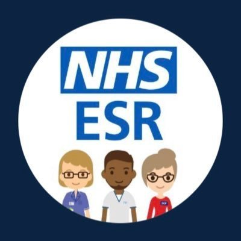

Mid Yorkshire Teaching NHS Trust


The hub provides access to a range of information to support personal learning and development needs, guidance on using ESR Learning Management and a catalogue of available training courses.
We hope you find this page useful and informative. Please feel free to explore the different sections and links. If you have any feedback or suggestions, please let us know. We value your input and appreciate your dedication to providing quality health care services. Thank you for being part of our team.
This section provides access to user guides on how to use the ESR Learning Management system.
This section provides access to user guides on how to use the ESR Learning Management system.
See link below to take you to Organisational Development’s Intranet page
Organisational Development’s Intranet pageSee link below to take you to Organisational Development’s Intranet page
Organisational Development’s Intranet pageSome training may differ from trust to trust, but most should transfer when joining via the IAT process. If any training is incorrect or hasn’t transferred, please email midyorks.org.dev@nhs.net. The team can investigate and process any documentation, screenshots, or learning records manually.
Once your certification has expired, you’ll need to renew the competency. If you’re struggling to access it or have queries, email midyorks.nlms@nhs.net Be sure to complete training shortly after accessing the course—if a competency expires mid-progress, your progress may reset.
Email midyorks.org.dev@nhs.net with the details of the incorrect or missing requirement so they can review them on your behalf.
Discover our Leadership Courses section, where you can unlock a treasure trove of knowledge and insights from seasoned leaders. Click the button below to reveal exclusive tips, strategies, and wisdom that can elevate your leadership skills to new heights. Whether you're a budding leader or a seasoned pro, this section is your gateway to growth and inspiration.
Expressions of Interest will be welcomed from consultants who seek to become an Aspiring Medical Leader, developing excellent and knowledgeable working in supportive and experienced teams who are competent to lead and compassionate in approach.
The programme consists of various developmental components including:
Approximate commitment: 40 hrs / 10 PAs development plus 30 hrs e-learning.
For further information, please email midyorks.org.dev@nhs.net.
Effective performance appraisal and staff development contribute directly to improved patient outcomes. That is why regulators such as the Care Quality Commission and the Department of Health and Social Care emphasise the importance of appraisal and development reviews.
Every member of staff should have an annual appraisal, including a six-monthly review (as a minimum), to ensure regular dialogue throughout the year. This gives staff a chance to receive feedback and reflect on progress against agreed objectives.
Appraisals are also a key opportunity to:
All new staff should receive an appraisal within 3 months of starting their role. For details, visit the Trust Policies intranet page.
Appraisals must be recorded via ESR. A downloadable handout is available to help with this process.
Dates for this course are available in ESR.
Would you like to have more effective and impactful conversations with individuals or your team? This 1-day programme focuses on the skills and techniques needed to have a truly great coaching conversation.
The course also introduces a variety of tools that can be used to structure conversations including:
For further information, please email midyorks.org.dev@nhs.net.
All new Consultants, Senior Doctors and Managers will be invited to participate in this leadership programme aimed at:
The programme begins with participation in the Embedding the Values & Behaviours (EVB) Programme, and includes various developmental components such as:
These components are delivered throughout the year, with participants joining upon commencement within the Trust.
Approximate commitment: 48 hours / 12 PAs development
For further information, please email midyorks.org.dev@nhs.net.
The Embedding Values & Behaviours programme was introduced in late 2018. It provides leadership development for Band 7 and above, empowering the organisation through a compassionate lens.
Hosted at a venue in the heart of our community, participants invest 3 days in learning how to:
Each participant also receives a PRINT psychometric report, helping them understand how to remain motivated and productive.
Recommended for: Colleagues at Band 7 or above.
For further information, please email midyorks.org.dev@nhs.net.
This course explores employee engagement: what it is, why it matters, what drives it, and what it means for your leadership and management role.
The workshop includes:
For further information, please email midyorks.org.dev@nhs.net.
This is a highly participative programme accredited by the ILM. It offers a practical grounding in the distinctions between coaching and mentoring, and explores how coaching can support individual and organisational growth.
You’ll gain the knowledge and skills to become a confident, well-practiced coach, capable of contributing to a robust coaching service within Mid Yorkshire Teaching NHS Trust.
This course is ideal for staff who wish to actively coach within the Trust and meet the participation criteria listed above. A manager’s statement of support must be completed as part of your application.
For further information, please email midyorks.org.dev@nhs.net.
This three-day programme plus half-day follow-up is designed to support leadership growth and personal development for staff from a variety of disciplines. It promotes:
We would recommend that people new to leadership roles undertake the Leading and Empowered Team training first.
Recommended for: Colleagues currently leading/managing others or those who have completed prior leadership training.
For further information and to request an application form, please email midyorks.org.dev@nhs.net.
This 2-day interactive programme introduces participants to the complexities of leadership, empowerment, and team dynamics. It prepares individuals to step confidently into leading change or managing projects within a team setting.
Suitable for:
Dates: Available in ESR.
This 1-day interactive programme introduces participants to the dynamics of teamwork, the importance of shared values and behaviours, and their impact on trust within teams. It highlights the roles we all play in shaping how our teams function and collaborate.
Dates: Available in ESR.
This 1-day interactive workshop is designed to help line managers boost their confidence when managing staff. Participants will explore best practices and gain practical tools and tips to enhance their effectiveness in leading people.
Suitable for:
Dates: Available in ESR.
Do you know how to talk to someone who is worried or distressed?
The Sage & Thyme workshop teaches evidence-based communication skills to support compassionate
and effective conversations.
Dates: Available in ESR.
Once in employment
Delivery: Face-to-Face (2 days) on Staff Induction Days
Booking: Book via an on-boarding form completed by manager prior to employment. Complete by attending Staff Induction and completing the signing-in sheet. Organisational Development to update competency following attendance.
Once in employment
Delivery: Face-to-Face with Manager
Booking: Complete with manager within 1st week of employment. Organisational Development informed of date completed (either by employee or manager) to update competency.
Every three years
Delivery: eLearning (NLMS) – 30 mins. Covered on Induction for new starters.
Booking: 377 Equality and Diversity and Human Rights eLearning Certification once subscribed. Enrol on 000 Equality and Diversity and Human Rights Level 1.
Every year
Delivery: eLearning (NLMS) – 15 mins for Admin & Clerical, Estates & Ancillary, Additional Clinical Services, Healthcare Scientist. Covered on Induction for new starters.
Booking: 377 Fire Safety eLearning Certification once subscribed. Enrol on 000 Fire Safety Level 1.
Every year
Delivery: Face-to-Face (1 hour) for Medical & Dental, Nursing & Midwifery, Allied Health Professionals, Additional Professional Scientific and Technical. These staff groups cannot use eLearning to update compliance. Covered on Induction for new starters.
Booking: Book through Organisational Development 01924 543748 (x3748) or midyorks.orgdev@nhs.net. Staff can self-enrol using this ESR link.
Every three years
Delivery: eLearning (NLMS) – 15 mins. Covered on Induction for new starters.
Booking: 377 Health and Safety eLearning Certification once subscribed. Enrol on 000 Health, Safety and Welfare Level 1.
Every year
Delivery: A supportive conversation about health and wellbeing with a person they trust (does not need to be their manager).
Booking: Individuals can opt in or out and email midyorks.hwconversations@nhs.net with the date they had a conversation or opted out.
Every three years
Delivery: eLearning (NLMS) – 40 mins. Covered on Induction for new starters.
Booking: 377 Infection Control: Infection Prevention & Control L1 eLearning Certification once subscribed. Enrol on 000 Infection Prevention and Control – Level 1.
Every year
Delivery: eLearning (NLMS) – 60 mins. Covered on Induction for new starters.
Booking: 377 Information Governance eLearning Certification once subscribed. Enrol on 000 Data Security Awareness Level 1.
Once in employment
Delivery: eLearning (NLMS) – 15 mins. Covered on Induction for new starters.
Booking: 377 Moving and Handling Level 1 eLearning Certification once subscribed. Enrol on 000 Moving and Handling Level 1.
Every three years
Delivery: Automatically covered when SG Adults Level 2 or Level 3 (face-to-face or eLearning) is completed.
Booking: N/A
Every three years
Delivery: eLearning (NLMS) – 90 mins
Booking: 377 Oliver McGowan eLearning Certification once subscribed. Enrol on 377 Oliver McGowan eLearning.
Every three years
Delivery: eLearning (NLMS) – 35 mins. If Level 3 is completed, this automatically updates this competency.
Booking: 377 Preventing Radicalisation – Basic Prevent Awareness Level 1 eLearning Certification once subscribed. Enrol on 000 Preventing Radicalisation – Basic Prevent Awareness.
Every three years
Delivery: eLearning (NLMS) – 30 mins. If Level 2 or 3 is completed, this automatically updates this competency Level 1.
Booking: 377 Safeguarding Adults Level 1 eLearning Certification once subscribed. Enrol on 000 Safeguarding Adults Level 1.
Every three years
Delivery: eLearning (NLMS) – 30 mins. If Level 2 or 3 is completed, this automatically updates this competency Level 1.
Booking: 377 Safeguarding Children Level 2 eLearning Certification once subscribed. Enrol on 000 Safeguarding Children Level 1.
This local competency is essential for any staff involved in transfusion activities. It offers both face-to-face and online formats to ensure clinical understanding of safe transfusion practice and patient safety procedures.
This CSTF competency supports staff who interact directly with the public, helping them manage challenging situations and uphold respectful communication under pressure.
This local competency ensures medical, dental, and other healthcare professionals understand procedures requiring written consent and the associated legal and ethical responsibilities.
This Level 3 local training is designed for estates and ancillary staff working in high-risk environments, focusing on robust risk awareness and control measures specific to physical and technical hazards.
This CSTF Level 2 training provides clinical staff with in-depth knowledge of infection control procedures, including enhanced guidance on hand hygiene and sharps injury management.
This local competency provides essential training for staff handling medicines in non-clinical contexts, with a focus on safe practices related to storage, transport, and delivery.
This Level 2 local competency covers safe prescribing, dispensing, and administration of medicines for a wide range of professional staff. Completion of Level 2 exempts staff from Level 1 requirements.
This CSTF Level 2 competency focuses on safe moving and handling for staff who engage with patients or heavy loads. It includes both theory and practical elements, delivered by a Link Worker or the Manual Handling Team.
This local competency ensures front-line staff are trained to assess and respect patient capacity in care decisions. It is mandatory for all front-line roles and offered through eLearning or covered in face-to-face safeguarding sessions.
This local competency provides advanced understanding of the Mental Capacity Act for senior staff in decision-making roles. It is typically required for Band 6 and above, including medical staff.
This training provides general awareness of learning disability and autism for all staff, fulfilling requirements under the Health and Care Act 2022. It is part of the wider Oliver McGowan Mandatory Training framework.
This training provides deeper insight into learning disability and autism for healthcare professionals delivering direct patient care. It satisfies requirements under the Health and Care Act 2022 and follows the national Tier 2 framework.
This local competency addresses essential patient safety principles including complaints investigation, claims handling, patient falls, and Duty of Candour. It is designed for staff with direct patient contact or roles linked to Clinical Governance.
This CSTF competency supports staff in recognising, responding to, and reporting safeguarding concerns involving vulnerable adults. It is designed for practitioners with substantial patient contact and is aligned with national intercollegiate standards.
This CSTF Level 3 competency supports senior registered healthcare staff in assessing, planning, intervening, and evaluating adult safeguarding concerns. It is mandatory for staff in leadership and decision-making roles, aligning with intercollegiate guidance.
This CSTF competency trains healthcare staff to identify and respond to safeguarding concerns involving children, young people, and associated carers. It follows the standards set in the January 2019 Intercollegiate Document.
This CSTF Level 3 competency empowers senior clinical staff to make informed safeguarding assessments and interventions involving children and young people. It is essential for those with lead responsibilities and reflects standards from the January 2019 Intercollegiate Document.
This CSTF Level 4 competency supports Named Safeguarding Professionals in demonstrating ongoing professional development in relation to safeguarding children and adults. It is delivered externally through multi-agency training programmes.
This local competency ensures key staff groups are trained in the prevention and management of VTE, aligning with patient safety and clinical best practice guidance.
This suite of role-specific Resuscitation Training ensures staff are prepared to respond to emergencies, aligned with their caseload and setting. All sessions are face-to-face and tailored to clinical need, with durations and recertification pathways clearly defined.
| # | Who for? | Subject | Frequency | Delivery & Duration | Contact |
|---|---|---|---|---|---|
| 1 | Ward-based Registered Nurses | AED use, patient deterioration, anaphylaxis, BLS, FBAO, DNACPR/Respect | Annual | Face-to-face – 2.5 hrs | Lesley Whittaker – Ext 53705 |
| 2 | Non-medical clinical staff (adult caseload) | Adult BLS, AED, anaphylaxis, DNACPR/Respect | Annual | Face-to-face – 1.5 hrs | Lesley Whittaker – Ext 53705 |
| 3 | Crash team responders (ED/CCU/ARCU) | Immediate Life Support – ILS and ILS Recertification | Once only / Annual | Face-to-face – 8 hrs / 5 hrs | Lesley Whittaker – Ext 53705 |
| 4 | Staff with paediatric caseload | Paediatric BLS | Annual | Face-to-face – 2 hrs | Lesley Whittaker – Ext 53705 |
| 5 | Paediatric wards – Registered Nurses | PILS/EPLS, Recertification | Once only / Annual | Face-to-face – 1 day / 5 hrs | Lesley Whittaker – Ext 53705 |
| 6 | Midwives & Neonatal Nurses (Band 6+) | NLS every 4 years + annual resuscitation | 4 Years / Annual | Face-to-face – 8 hrs / 3.5 hrs | Lesley Whittaker – Ext 53705 |
| 7 | Medical staff with patient contact & Cardiac Arrest Team | In-house sessions + Advanced Life Support | Annual | Face-to-face – 2.5 / 3.5 / 5.5 hrs | Lesley Whittaker – Ext 53705 |
| 8 | Dentists delivering sedation | ILS/PILS – Full or Recertification | Annual | Face-to-face – 8 hrs / 4.5 hrs | Lesley Whittaker – Ext 53705 |
| 9 | ALSg Instructors | Competence maintained via teaching & clinical exposure | — | Face-to-face – Exempt from updates | Lesley Whittaker – Ext 53705 |
This local competency introduces clinical staff to the principles of acute oncology, including awareness of treatment-related complications and escalation processes. It is essential for safe patient care in oncology settings.
This training supports clinical staff in delivering brief interventions related to alcohol consumption and smoking cessation. It aims to promote healthier lifestyle choices through effective patient communication.
This training ensures midwives are equipped with up-to-date knowledge and skills to support antenatal and new-born screening procedures. It promotes best practices in early detection and care.
This training ensures healthcare staff are supervised and assessed in aseptic non-touch technique (ANTT), supporting safe practice during invasive procedures across multiple disciplines.
This training prepares registered healthcare professionals to assess and certify colleagues' competency in aseptic non-touch technique (ANTT) within their clinical setting, ensuring the quality and consistency of safe practices.
This training provides essential asthma management guidance for staff working with children and young people in clinical settings. It covers best practices in assessment, intervention, and ongoing care.
This training ensures healthcare professionals are confident in using the BBraun Infusomat Space Plus infusion pump. It supports safe and effective delivery of IV medication through both digital and hands-on formats.
This training equips healthcare professionals with the skills to operate the BBraun Perfusor Space Plus syringe driver pump safely and effectively. Both digital and in-person formats provide thorough practical guidance.
This training supports clinical teams in identifying and mitigating risks associated with the use of bed rails in adult care settings. It highlights safe practices and legal responsibilities to prevent harm.
This training introduces staff to the BaBi research initiative, supporting data-driven improvements in maternal and infant health outcomes. It’s delivered in two parts—initial onboarding and ongoing annual refreshers.
This practical assessment validates the skills of healthcare professionals in obtaining venous blood samples for pre-transfusion testing. It supports patient safety and clinical accuracy in transfusion procedures.
This training ensures healthcare professionals are competent in using Bloodtrack systems when collecting blood from clinical blood fridges. It supports safety, traceability, and regulatory compliance in transfusion practices.
This practical assessment ensures clinical staff can accurately complete blood collection receipt documentation for blood fridge access. It supports safe handling, traceability, and compliance in transfusion workflows.
This practical assessment ensures clinical staff are confident in safely preparing and administering blood and blood components to patients. It excludes roles not authorised for transfusion procedures and reinforces best practice in patient safety and regulatory compliance.
This training supports portering staff in safely transporting blood products from the transfusion laboratory to satellite blood fridges. It ensures awareness of cold chain responsibilities and traceability procedures in transfusion logistics.
This training supports trust drivers in maintaining Good Manufacturing Practice standards when transporting blood and blood components between MYHT hospitals, hospices, and NHS Blood and Transplant (NHSBT). It includes an annual written assessment and materials accessible on the intranet.
This training enables clinical staff to confidently and safely use BP Pulse and Oxygen Saturation monitoring equipment, supporting accurate patient observations in a range of care settings.
This training supports the clinical workforce in delivering evidence-based breastfeeding care across maternity, paediatrics, and neonatal settings. It combines face-to-face sessions and eLearning options tailored by role.
This annual training keeps maternity and paediatric clinical staff updated on evidence-based breastfeeding practices. It is available via multiple formats to support accessibility and ongoing professional development.
This policy outlines best practices in infant feeding across maternity settings. Staff are required to read the document and confirm their understanding by signing Appendix 6 and submitting it to Organisational Development.
This face-to-face training module focuses on best practices in labour care and is mandatory for all midwives annually. Coordinated by the maternity education team.
This competency-based training ensures safe and effective care for adult patients with epidural catheters outside the maternity setting. Completion of the Core Competency Framework Booklet is required at the start of employment.
This eLearning refresher reinforces safe care practices for adult patients with epidural catheters in situ. It’s aimed at clinical staff in designated non-maternity areas and is delivered annually via the NLMS platform.
This mandatory face-to-face training ensures safe and confident management of Central Venous Access Devices across community healthcare settings. It’s delivered yearly by qualified clinical educators.
This eLearning module supports psychological practitioners in fostering culturally safe environments. Delivered through the NLMS platform every two years, it encourages respectful care and inclusion across diverse service contexts.
This NLMS eLearning module equips staff with the knowledge and tools to support patients with cognitive impairments during face-to-face care. Designed for non-community services, this training promotes inclusive and responsive healthcare delivery.
This eLearning module provides essential training for clinical staff managing diabetic patients, with particular focus on safe insulin administration. Completion is required once during employment and accessed via NLMS.
This annual face-to-face session provides essential training for managing diabetic patients in the community. Delivered by the Adult Community Services team, the module supports safe practice and confident insulin handling.
This comprehensive online training covers the end-to-end elective care pathway. It’s designed for NHS staff whose daily tasks intersect with elective care processes. The training includes ten structured modules delivered via the eLearning platform.
This face-to-face training promotes compassionate and skilled care delivery for patients at the end of life. Designed for multidisciplinary staff, the session is delivered biannually by clinical educators.
This essential safety assessment ensures proper fitting of FFP3 masks for infection control compliance. Delivered directly on the ward every two years, this testing applies to a wide range of clinical and support staff.
This face-to-face training supports safe food handling and hygiene practices for staff involved in food preparation and service. Completion is required within the first 3 months of employment, followed by a refresher every 2 years.
This onboarding questionnaire supports written food safety understanding for hospitality and ward support staff. It forms part of their initial training and must be completed within the first few weeks of employment.
This NIHR-endorsed online module provides vital training for all research-active staff. Covering ethical, regulatory, and practical aspects of conducting clinical trials, the course is mandatory every three years.
This NIHR-accredited online training equips pharmacy staff with essential knowledge in the ethical and regulatory principles of clinical trial management. Completion of the introductory module is required once, followed by a refresher every 2 years.
This eLearning module ensures pharmacy staff comply with Good Manufacturing Practice standards in the preparation and handling of medicinal products. It’s delivered annually to key roles across pharmacy services.
This annual eLearning module ensures that porters and drivers supporting pharmaceutical services uphold best practices in the handling and transport of medicinal products. It complements GMP training for wider pharmacy teams.
This online training module equips midwives with the knowledge and skills to follow national standards for fetal growth assessment. Completion is required once during employment.
These supportive, staff-led conversations offer a safe space to check in, reflect, and strengthen wellbeing across all roles. Staff can choose to speak with either their line manager or a peer. The goal is to promote trust, empathy, and ongoing care within the workforce.
This written checklist ensures that all new staff—and staff transitioning into a different role or department—are properly inducted with relevant local procedures and expectations. It must be completed at the start of employment or upon redeployment.
This competency training equips midwives with best practices in fetal heart rate monitoring using intermittent auscultation techniques. Completion is based on written materials, supported by self and peer assessment.
This foundational e-learning module equips maternity staff and obstetric teams with essential knowledge and skills in intrapartum care. Access is via the maternity training intranet page and completion is required once during employment.
This mandatory e-learning module equips pharmacy staff with essential knowledge to safely support the handling, preparation, and management of intrathecal chemotherapy treatments. Completion is required every year to maintain high safety and governance standards.
This e-learning course consists of five modules covering the Ionising Radiation (Medical Exposure) Regulations. Tailored for medical staff in Plastic Surgery and Trauma & Orthopaedics, the training ensures safe and compliant use of radiation in clinical practice. Completion is required every five years.
This face-to-face module delivers annual training in fetal monitoring techniques for maternity clinicians. Tailored for midwives and obstetricians, it ensures accurate interpretation and response to fetal heart rate patterns during labour.
This annual eLearning module supports safe and effective fetal monitoring practices for maternity clinicians. It complements face-to-face sessions by offering flexible digital access to essential theory and guidelines.
This NLMS eLearning module supports accurate measurement and interpretation of lying and standing blood pressure readings across multidisciplinary roles. Completion ensures safe clinical practice and postural assessment awareness.
This annual competency review ensures maternity and nursing staff are confident and compliant in using medical devices safely and appropriately. The framework is completed as a written self-assessment, supported during annual appraisal.
This annual eLearning module ensures MRI supervisory staff uphold critical safety protocols within magnetic environments. It reinforces safe practice standards across radiographic teams and supports ongoing compliance with national guidance.
This annual NLMS eLearning module provides Clinical Support Workers with essential safety knowledge for working within magnetic resonance environments. It covers key procedures, risk factors, and regulatory guidance to ensure safe daily operations.
This online module equips clinical staff with the knowledge and confidence to accurately monitor and assess deteriorating patients using the NEWS system. It promotes prompt intervention and ensures alignment with national patient safety standards.
This annual online training equips maternity staff with the knowledge required to carry out blood spot screening in newborns, ensuring national standards and protocols are met for early detection of metabolic conditions.
This annual face-to-face training equips midwives and obstetricians with essential skills in newborn resuscitation and life support. The module ensures clinical teams can respond effectively and compassionately in critical early moments of care.
This mandatory training equips nurses and doctors with essential knowledge on safe insertion and ongoing care of nasogastric (NG) tubes. Delivered via the NHS Learning Management System (NLMS), it ensures best practice compliance for nutritional support.
This competency sign-off is a one-time requirement upon employment for nurses and doctors who will be inserting nasogastric (NG) tubes in adult patients. Peer-assessed under the Core Competency Framework, it ensures practical proficiency and safety in NG procedures.
This critical training module provides doctors with the skills required to safely and accurately interpret chest X-rays for verifying NG tube placement in adult patients. Delivered via NLMS, it supports clinical decision-making and patient safety protocols.
The 'MUST' screening tool helps care workers identify adults who may be malnourished, at risk of malnutrition (undernutrition), or obese. It includes evidence-based management guidelines to support care plan development across hospital, community, and other care settings.
This mandatory training introduces the Orbis Red Alert system designed to safeguard lone workers across Adult Community Services. The course ensures the clinical workforce understands key protocols and how to activate rapid alerts when needed.
This essential training module provides guidance for all staff involved in administering or prescribing oxygen. It focuses on safe practices, oxygen storage, fire risk awareness, and patient monitoring protocols—ensuring best practice compliance across care environments.
This core face-to-face competency validates safe administration of intravenous medicines via peripheral cannula for eligible clinical staff across departments. Staff groups excluded include Nursing Associates (except Paeds/Neonates), Interventional Radiology, ACD (Gate 12, ED, etc.).
This annual face-to-face module empowers maternity and nursing teams to deliver person-centred care. It reinforces best practice in communication, shared decision-making, and holistic wellbeing to support positive outcomes across diverse clinical settings.
This training supports qualified nursing staff in administering specified intravenous antibiotics under Patient Group Directions (PGDs). Focused on Gate 21, Acute Oncology, and Chemo Day Units, it includes sign-off upon employment and remains valid until PGDs are updated.
This competency-based training enables qualified Band 5+ nursing staff on Gate 29 Regional Burns Unit to administer Ibuprofen under a Patient Group Direction (PGD). It is signed off once in employment and remains valid until PGDs are updated.
This competency-based PGD module enables qualified Band 5+ nursing staff on Gate 27 to administer Nicotine Patches for patients under structured protocols. The sign-off is completed once in employment and remains active until PGD documentation is updated.
This PGD sign-off module certifies Band 7 nursing staff in the safe administration of Flumazenil, Lidocaine, and Midazolam within endoscopy services trustwide. It ensures competency in sedation protocols, reversal agents, and topical applications critical to procedural care.
This hands-on competency ensures staff understand and can safely operate Pipeline Flowmeters from the Diamond Range. Delivered face-to-face and structured within the Core Competency Framework, the training is essential for oxygen and gas flow management across clinical roles.
This annual training fosters rapid response, teamwork, and decision-making in obstetric emergencies. PROMPT is delivered face-to-face for all clinical staff in Maternity Services, with online access available to selective staff groups as an alternative format. It promotes safety, communication, and collaborative practice in high-stakes scenarios.
This essential safeguarding module educates clinical staff on preventing pressure ulcers and promoting early intervention. Following the voice-narrated online e-learning, staff complete a 1.5-hour face-to-face session led by the Tissue Viability Team. The programme is delivered trustwide to support proactive and compassionate care.
This mandatory eLearning module equips clinical staff in Adult Community Services with knowledge and strategies to identify, prevent, and manage pressure ulcers. It supports proactive care planning, tissue viability principles, and compliance with clinical governance standards.
This face-to-face module is delivered every two years to clinical staff in Adult Community Services. Led by the Deputy Governance Manager, it reinforces proactive prevention, clinical assessment, and best practice in pressure ulcer care and management across community settings.
This mandatory module equips staff in high-contact roles with knowledge to safeguard vulnerable adults against radicalisation. Enrol on course code 000 Preventing Radicalisation – Awareness of Prevent (Level 3) to gain certification under 377 Preventing Radicalisation – Prevent Awareness Level 3. Delivered via NLMS, it takes approximately 55 minutes.
This hands-on training ensures safe and effective use of Enterprise 5000 and 5000x profiling beds. Delivered face-to-face or by Link Trainer, the competency is assessed in clinical environments and applies to a wide range of healthcare roles involved in patient movement and safety.
This core competency training supports clinical staff in safely operating the Contoura 1080 profiling bed. Delivered in the clinical environment via face-to-face teaching or Link Trainer guidance, the module ensures confident and secure patient handling across multidisciplinary teams.
This final sign-off module completes the Emergency Nursing core competency pathway based on the RCN National Curriculum. Delivered within clinical settings, it confirms readiness and advanced practice skills for leadership and care delivery in urgent care environments including Emergency Departments and Urgent Treatment Centres at PGI.
This annual sign-off module ensures ongoing competency and adherence to the RCN National Curriculum for Emergency Nursing. Targeted at senior clinical staff in Emergency Departments and Urgent Treatment Centres at PGI, it reinforces critical care standards, leadership, and best-practice delivery.
This certificated eLearning module supports multidisciplinary inpatient teams in applying the Reason to Reside (R2R) criteria to care planning and discharge decisions. It ensures all staff can contribute to timely, safe patient flow aligned with NHS frameworks.
This certificated eLearning module supports senior clinical staff in understanding legal responsibilities and compliance surrounding the Mental Health Act. Focused on receipt and scrutiny duties, the course reinforces safe, lawful admission practices in inpatient settings (excluding emergency departments).
This annual eLearning module trains urgent care and emergency staff to identify signs of deterioration in paediatric patients. The course focuses on early intervention, communication pathways, and escalation protocols to support timely, effective care in ED and UTC settings.
This short eLearning module gives patient-facing non-clinical staff a basic understanding of the ReSPECT plan. It helps ward clerks, receptionists, and porters identify patients with active plans and know when to escalate questions or concerns to the clinical team.
This focused 20-minute eLearning module supports direct patient contact staff in responding appropriately to a ReSPECT plan during emergencies. The training strengthens clinical understanding and operational clarity for escalation and care decision-making across adult-facing roles.
This 30-minute eLearning module supports senior clinicians in conducting ReSPECT conversations during emergencies and ongoing care planning. It focuses on shared decision-making, patient values, and escalation choices, ensuring sensitive and legally sound discussions with patients and their families.
This eLearning module focuses on reducing stillbirth and neonatal mortality through improved clinical awareness and intervention. Targeted at maternity teams, it supports adherence to national safety protocols and strengthens outcomes through proactive care strategies.
This face-to-face module forms part of the national initiative to reduce stillbirth and neonatal harm by empowering midwives with practical strategies and clinical awareness. Delivered annually, the training supports improved risk assessment, monitoring, and compassionate maternity care.
This certificated training equips Registered Nurses and Midwives with essential knowledge for recognising and responding to sepsis. Delivered every three years via face-to-face instruction and an eLearning package, it supports timely diagnosis, clinical escalation, and improved patient outcomes.
This short eLearning module supports safe and confident use of the Solite Pro bed and its rail system within community care settings. It ensures the clinical workforce understands risk, positioning, and operational features to enhance patient safety during bed-based care and transfers.
This induction programme welcomes newly contracted staff to the Trust, building essential knowledge, cultural awareness, and support connections. Delivered face-to-face, it ensures all new colleagues begin confidently, aligned with Trust values and operational expectations.
This face-to-face training module ensures safe and effective use of the Green Lid Suction Jar/Bag System. Designed for a broad range of clinical staff, the session covers setup, operation, hygiene protocols, and troubleshooting to support airway management and patient safety.
This face-to-face competency session ensures safe and confident use of the Diamond Range Suction Unit. It covers clinical setup, hygiene protocols, suction technique, and troubleshooting. The module is suited for a wide scope of healthcare professionals across inpatient and community care.
This multi-format training ensures nursing staff are competent in using the T34 syringe driver for medication infusions. It combines peer-assessed core competency, face-to-face training, and eLearning, with optional Link Trainer support delivered within clinical areas. Certification is renewed every three years.
This short eLearning module ensures proper use of the Suretemp thermometer via the axilla route. It reinforces safe practice, infection control, and accurate clinical documentation. Suitable for a broad range of healthcare professionals involved in temperature monitoring and basic observations.
This 30-minute eLearning module ensures safe and effective use of the Braun Pro6000 tympanic thermometer. It highlights technique, hygiene, and documentation for reliable temperature readings. Ideal for clinical teams responsible for vital signs observation and escalation protocols.
This certificated 30-minute eLearning module equips clinical staff with essential knowledge on safe tracheostomy care and emergency response. Targeted at designated Gates, it reinforces airway management, troubleshooting, and patient safety in wards with tracheostomy patients.
This competency framework supports nursing and midwifery staff in safely managing tracheostomy and laryngectomy patients across designated clinical Gates. It ensures effective care delivery, emergency preparedness, and patient reassurance through peer-assessed sign-off within the ward setting.
This face-to-face refresher module supports clinical teams in maintaining safe and effective care practices for patients with tracheostomies and laryngectomies. Delivered every three years, following completion of the Core Competency Framework sign-off, it reinforces emergency protocols, communication pathways, and best practice across designated Gates.
This face-to-face module ensures staff working in high-acuity areas are equipped to safely operate the Trilogy Evo non-invasive ventilator. The session covers setup, troubleshooting, patient comfort adjustments, and emergency response procedures to support respiratory care.
This face-to-face training equips staff in high-acuity areas with the skills to safely operate the Trilogy 202 non-invasive ventilator. Covering setup, adjustment, patient safety features, and troubleshooting, it reinforces respiratory support protocols across critical care settings.
This digital training module supports the full clinical workforce in Adult Community Services, delivering up-to-date guidance on wound assessment, dressing selection, infection control, and escalation protocols. Accessible via the National Learning Management System (NLMS), it fosters consistent, high-quality care across community teams.